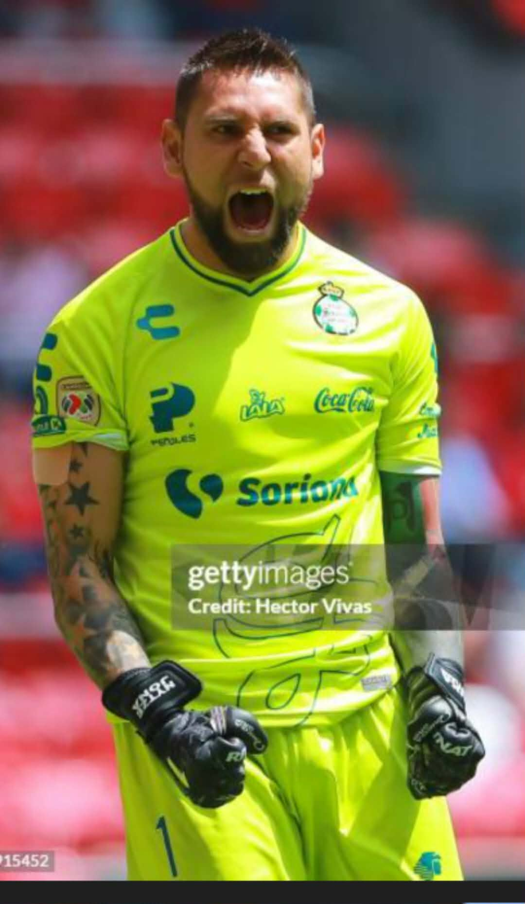

Campeón de la Liga de Campeones de la CONCACAF en varias ocasiones.
Participó en el Mundial de Clubes de la FIFA.
Ganó la Liga MX con Monterrey.
Convocado a la Selección Mexicana en distintas etapas.